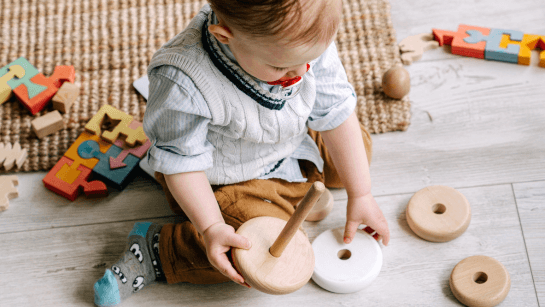

Clases de inglés para bebés: aprendizaje a través del juego y el vínculo

Nuestras clases de inglés para bebés de 1 a 2 años están diseñadas para favorecer el desarrollo del lenguaje y la comunicación desde una edad temprana. Cada sesión tiene una duración de 45 minutos y se realiza en grupos reducidos, siempre acompañados por un adulto de referencia.
Utilizamos una metodología basada en la exposición natural al idioma: canciones, juegos sensoriales, rutinas visuales, cuentos y movimiento corporal. Todo está cuidadosamente adaptado a su etapa de desarrollo, para que el aprendizaje se produzca de forma espontánea, afectiva y divertida.
El objetivo principal es que los bebés se familiaricen con los sonidos del inglés y comiencen a reconocer palabras y expresiones básicas a través de la repetición y la interacción emocional. No se busca que hablen el idioma, sino que lo vivan como algo natural desde el comienzo.